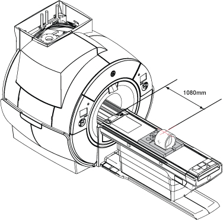

Calibrating B0 drift
Prerequisites
With short-term B0 drift, the main magnetic field returns to its original value after scanning stops. Given sufficient non-active time, short-term B0 drift is reversible. However, too much short-term drift can have an adverse impact on image quality. It can cause an image intensity shift during fMRI, TRICKS, and VIBRANT MPH, and banding artifacts in SSPS-based sequences, such as FIESTA and COSMIC. Short-term B0 drift shall not exceed 30 Hz per 10 minutes. This requirement is for the 7T, 3TLC magnet design and the G3 magnet design, regardless of temperature variants.
The B0 drift tool characterizes the B0 drift of a given magnet by monitoring the frequency of the system during a high power scan. The tool’s compensation factor is applied to any scan that affects B0.
B0 drift is directly affected by the amount of shim steel in the magnet. This calibration should be effective for the life of the system.
Procedure
- Put the TLT phantom and sphere in the foam support on the flat table.
Position the phantom in the center of the cradle and center it on the Posterior Array (PA) coil. To achieve the best test measurement, the phantom must be located in the center (long direction) of the cradle.
- Landmark the center of the phantom at 1080 mm from home position.
Figure 1. TLT phantom and sphere on table

- Landmark on the crosshairs of the body TLT loader and press Advance to Scan.
- Start the B0 drift tool:
- (For non-proprietary service tools) From the Common Service Desktop, select . Click Click here to start this tool.
The B0 Drift window appears. - All three axes are processed together. However, you can select X, Y, and Z axis individually, depending on the progress of the installation. To select more than one axis, hold the Shift key while clicking the axis to select.
- Click Calibrate Only.
- Click Scan.note: Images are generated during B0 drift calibration. Image quality is not relevant. Ignore any image quality issues or any error message related to image quality.
- B0 drift calibration requires 677 minutes (total time) to process. Wait 30 minutes before you leave the site to make sure the B0 drift scan is working properly.
- When B0 drift calibration completes, a screen displays the data for each axis.
- Click Exit to save results and exit the B0 drift tool.To troubleshoot calibration failures, refer to Checking B0 drift.